Memorable Quotes from the Show
View more quotes!
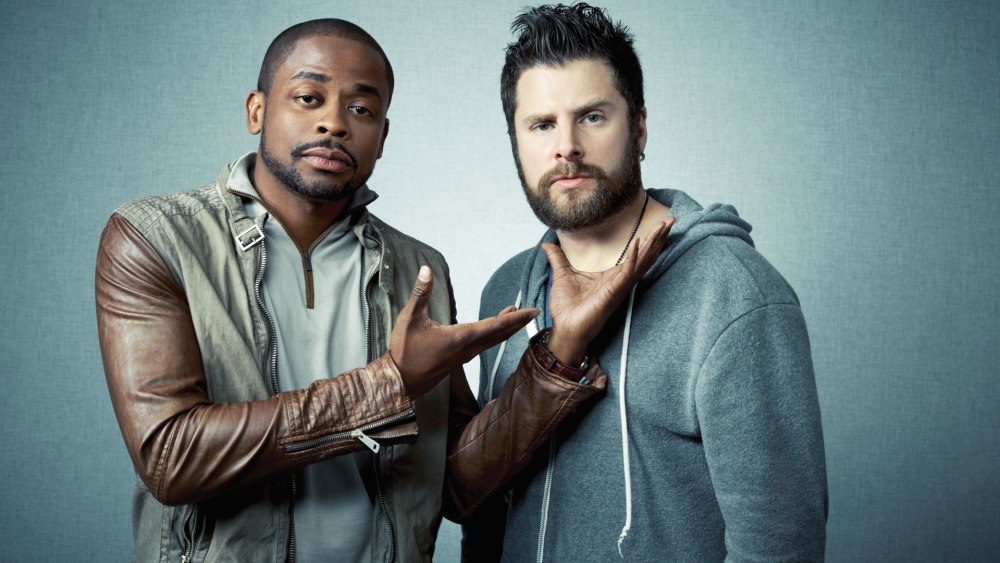
"I can't help being a gorgeous fiend. It's just the card I drew.
— Shawn Spencer (James Roday), Psych, Season 6: This Episode Sucks
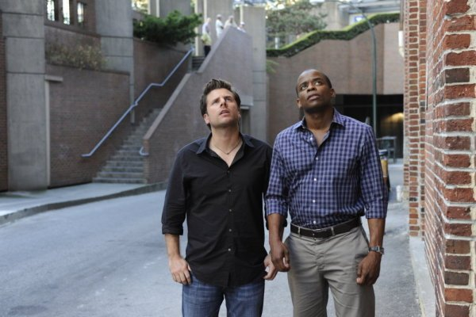
There is a witness. There's a cat. I want to talk to that cat as soon as he's done licking himself... wow, I'm jealous.
— Shawn Spencer (James Roday), Psych, Season 1: 9 Lives
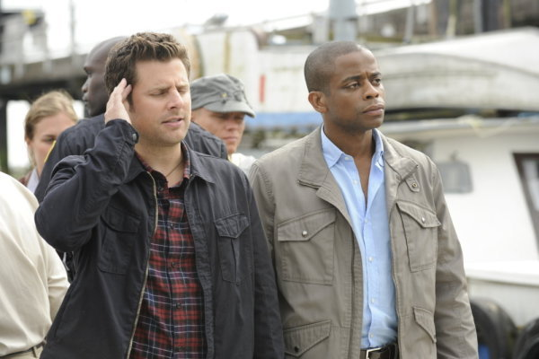
Ahoy, there! Um, yes. Right. Um, my name is Shawn Spencer. This is my first mate, Hummingbird Saltalamacchia.
— Shawn Spencer (James Roday), Psych, Season 3: Six Feet Under the Sea
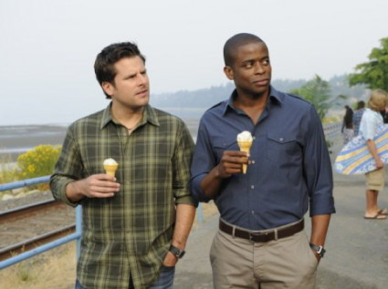
I can't believe you actually thought that text was from me. It lacked all nuance, my signature mocking tone, and was utterly devoid of emoticons.
— Shawn Spencer (James Roday), Psych, Season 3: Lassie Did a Bad, Bad Thing
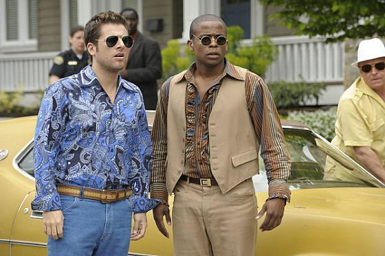
Partners do not lie to each other, because partners put their lives in each other's hands.
— Carlton Lassiter (Timothy Omundson), Psych, Season 6: Shawn Rescues Darth Vader
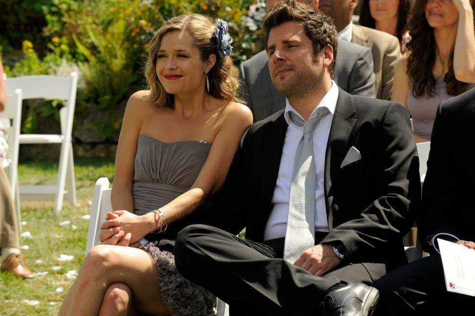
Take lots of pictures. Not of sights. Don't take pictures of buildings. Take pictures of moments, because that's what matters.
— Shawn Spencer (James Roday), Psych, Season 5: One, Maybe Two, Ways Out
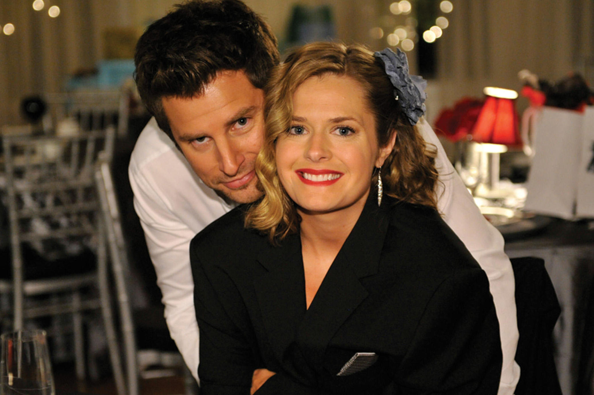
I have an idea, but we'll need cool names.
— Shawn Spencer (James Roday), Psych, Season 3: There Might Be Blood
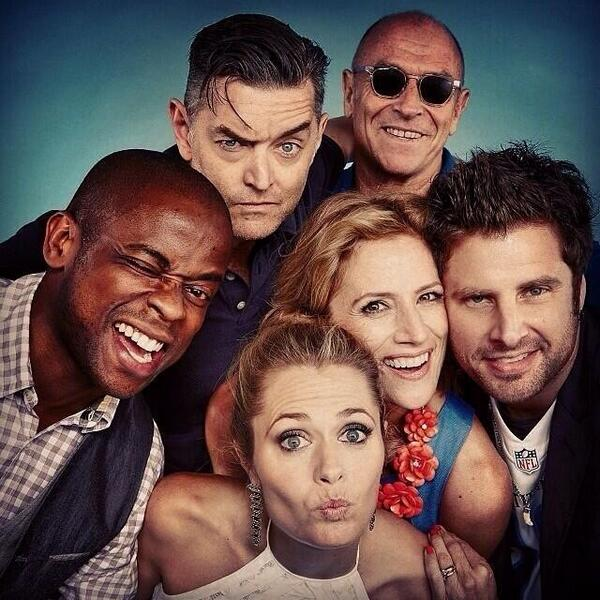
Suck it!
— Burton 'Gus' Guster (Dule Hill), Psych, Season 4: A Very Juliet Episode
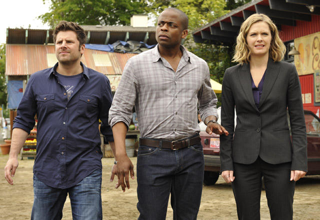
Shawn: I can't watch Channel 8 anymore. Lloyd Lansing wears a toupee. It's like every newscast begins with a lie.
— Shawn Spencer (James Roday), Psych, Season 4: The Head, The Tail, The Whole Damn Episode
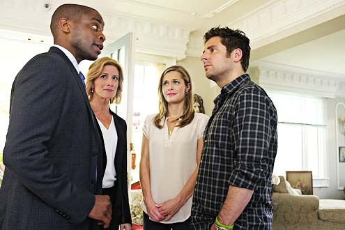
How can you tell that someone's a compulsive liar? I mean, assuming that their pants aren't on fire.
— Shawn Spencer (James Roday), Psych, Season 3: Truer Lies
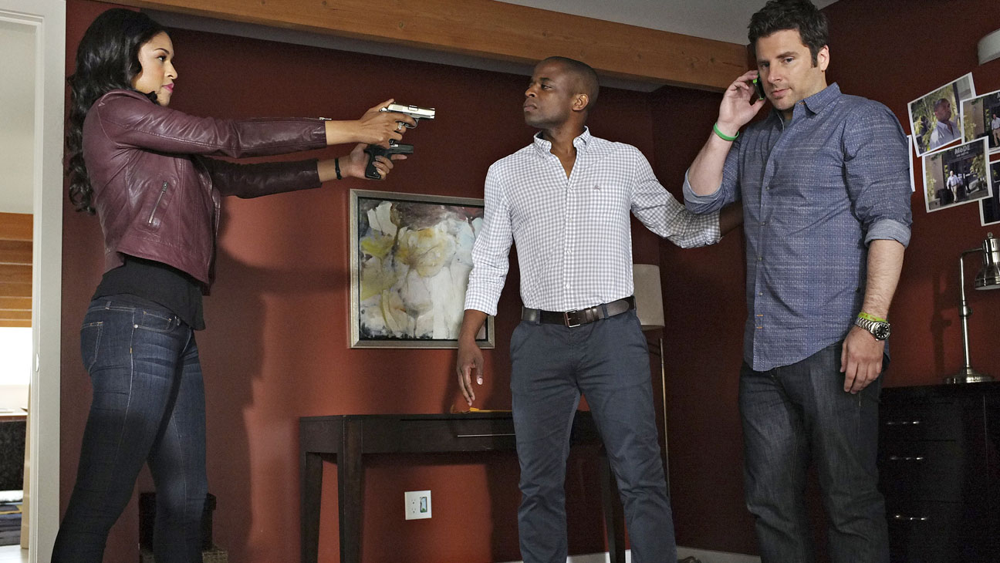
Guster, you have to wake up to the real world: people have sex and kill each other. That's the real world. Not some magical 'feelings' place.
— Carlton Lassiter (Timothy Omundson), Psych, Season 5: Feet Don't Kill Me Now